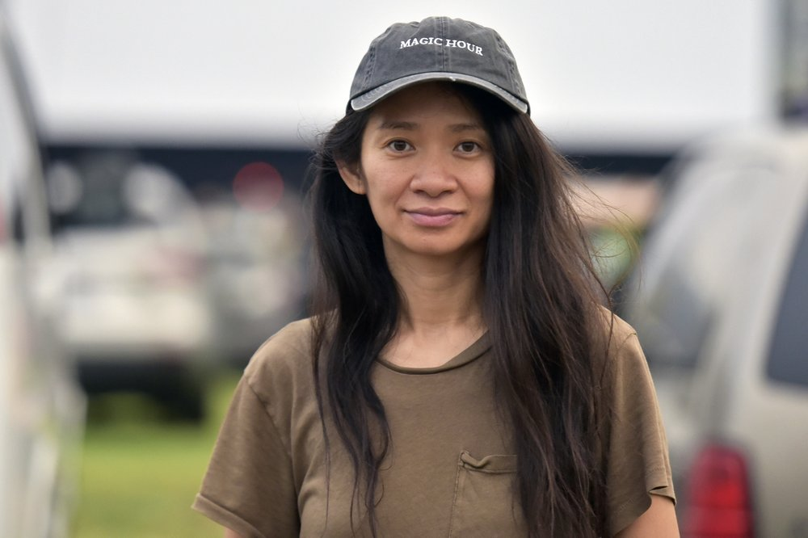

Chloé Zhao
That Lakota girl with a Chinese last name

"I feel like I'm in the business of recording time, and I'm always curious about how people would like to be remembered."
Here's a time line of Zhao's life:
ENGLISH / CHINESE
- 1982 - 出生于北京。成长为“一个叛逆青少年，学校里的懒蛋”，受日漫影响，画了些漫画，写了些同人小说。
- 1997 - 15岁被父母送到英国私立寄宿学校布莱顿学院。
- 2000 - 独自决定搬到洛杉矶，住在韩国城的公寓里，后就读于洛杉矶高中。
- 2005 - 毕业于马萨诸塞州霍利奥克山学院，主修政治，辅修电影研究。
- 2009 - 加入纽约大学 Tisch 艺术学院的 Kanbar 电影和电视学院研究生项目。制作了她的第一部作品，短片《阿特拉斯山脉（The Atlas Mountains）》。
- 2010 - 制作了第二部短片《女儿们（Daughters）》，讲述了一个生活在中国农村的14岁女孩“枫”被迫进入包办婚姻，试图挣脱险境的故事。这部短片在棕榈泉国际短片电影节获得了学生实景短片的第一名，其后又在Cinequest 电影节获得评审团特别奖。
- 2015 - 导演了她的第一部长片《哥哥教我唱的歌》。这部当代西部片在南达科他州的 Pine Ridge 印第安保护区拍摄，获得第 31 届独立精神奖最佳处女作提名。
- 2017 - 导演了《骑士》。和真正的牛仔一起度过了几个月。这部片子作为导演双周的一部分在戛纳电影节上首映，并获得了艺术电影奖。
- 2018 - 《骑士》在第 33 届独立精神奖中获得了最佳故事片和最佳导演提名，她还成为了以 Bonnie Tiburzi 命名的 Bonnie 奖的首届获奖者，该奖项旨在表彰处于职业生涯中期的女性导演。在独立精神奖颁奖典礼上，她认识了弗朗西丝·麦克多蒙德，一拍即合，确定了一桩未来的合作项目，《无依之地》，改编自 Jessica Bruder 的同名纪实文学。同年，漫威影业聘请她执导《永恒族》。
- 2020 - 《无依之地》 围绕着Bruder写书时遇见的真实人物展开。这部电影在威尼斯电影节首映，并获得金狮奖。
- 2021 - 《无依之地》上映。她获得了金球奖最佳导演奖。4月，她又获得了奥斯卡最佳导演奖。同年，《永恒族》于 11 月发布。她既是该片的导演，也是四位编剧之一。尽管有一些负面评价，但首映的周末仍然赚了 1.617 亿美元，成为票房第一。
“毕业后四年的游荡足以让她远离政治，当过调酒师，打过形形色色的零工，她发现自己更多地被人所吸引，而不是被政策所吸引。”
“是的，我不仅是一个女人，我还来自中国，是一个黄皮肤的女人。我常常遇到很多打击，在任何地方都没有宾至如归的感觉。但这对我是有好处的，是祸也是福。我一直觉得自己像个局外人，像变色龙一样，无论走到哪里都要去适应并选取新的身份，这样我才能融入其中——我能给自己营造一种家的感觉。”
“我在北京长大，但我小时候一直很喜欢去内蒙古。从大城市到平原，那是我的童年。我 20 多岁的时候在纽约待了很久，感到有点失落。我总是开玩笑说，老话讲得对，当你感到迷失时就一路往西走。对那时的我来说，西部就是纽约以西。它是美国的一部分，但我却对它一无所知。比如南达科他州大片土地是鲜有人迹的牧场，古老而宁静。在此之前，我的生活匆忙而瞬息万变，而在那里，时间就像停止了。”
“你是说和牛仔一起（工作）？这可能是我干过的最难的事情之一。年长的牛仔就像真正的老派，从来听不进去任何人说的话。男孩们和他们的父亲一起在路上学习如何放牛，或者在牧场工作。他们脑子里几乎完全没有女性的声音。我花了五周时间告诉他们要做什么。
“在生活中，我最常听到的是‘不’。老实说，我回家了也会哭，然后第二天早上醒来我说，再试一次。这一切都与如何敲到正确的门有关，因为你很可能会在满是男人的街头撞到脑袋。你必须做出一些改变，但除非这一代人都死光了，基本盘不会自己变动。对我来说，重要的是我可以延伸出一些触角吗？我可以从无到有建立一些东西吗？”
“在生活中，我最常听到的是‘不’。老实说，我回家了也会哭，然后第二天早上醒来我说，再试一次。这一切都与如何敲到正确的门有关，因为你很可能会在满是男人的街头撞到脑袋。你必须做出一些改变，但除非这一代人都死光了，基本盘不会自己变动。对我来说，重要的是我可以延伸出一些触角吗？我可以从无到有建立一些东西吗？”
“嗯，我确实认为，这可能无聊得你会翻白眼，但我觉得漫威在这部电影上冒了很大的风险......
“但这对我来说倒不是个意外。我在中国长大的过程中并没有太多接触电影的机会，事实上，我小时候遇到的第一种创意叙事就是日漫。我有很长一段时间都想成为一名漫画家。我画得不是很好，但漫画和动画一直是我的热情所在。这不是电影学校关注的重点，但我一直非常好奇想进入那个领域。”
“我们拍摄的最后一个场景是 Bob Wells 与 Fern 临别时的对话。他说这种游荡生活中，没有最后的告别，我会在路上再次见到你，这让我印象很深......有时我们都不得不暂时走开，让自己平静下来。但这也意味着：我们彼此相连，总有一天我们会再次见面。”
If you have time, you should read more about this incredible woman on her Wikipedia entry and Golden Globes interview.